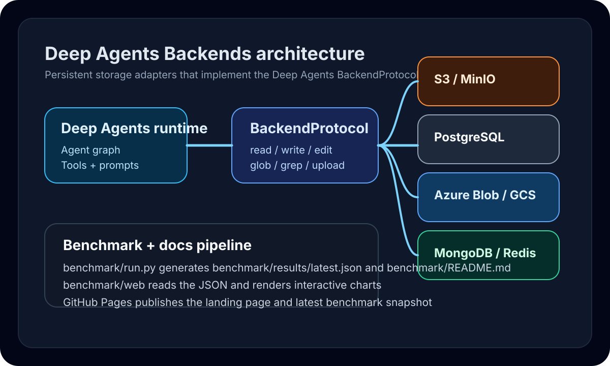

Persistent remote storage for Deep Agents
One package for S3, PostgreSQL, Azure Blob, GCS, MongoDB, and Redis/Valkey backends.
Deep Agents Backends extends LangChain Deep Agents with production-ready remote storage backends, plus reproducible benchmarks and deployment-ready documentation.
Repository map
What ships in this repo
deepagents-backends
Python package, backend implementations, Docker-based integration environment, benchmark harness, and published dashboard.
langchain-ai/deepagents
Source of the BackendProtocol, agent runtime, and local filesystem baseline used in the benchmark suite.
Published artifacts
benchmark/results/latest.json holds raw results; benchmark/web/ renders the GitHub Pages site from those results.
Supported backends
Choose the persistence model that fits the agent workflow
Architecture
How the package fits into Deep Agents

GitHub Pages deployment
How this site is published
- 1. Benchmark results are committed to
benchmark/results/latest.json. - 2. Static assets live in
benchmark/web/and read the latest JSON at runtime. - 3. The
pages.ymlworkflow copies the web assets and results into a Pages artifact. - 4. A push to
mainor a manual dispatch republishes the dashboard.
uv run python benchmark/run.py --manage-services --write-readme, then let the Pages workflow publish the visual dashboard.
Benchmark explorer
Visualize the latest committed benchmark run
Average median trace latency
Lower is better. This averages each backend's median latency across the full realistic replay suite.
Correctness vs latency
Quickly spot which backends stay fast while preserving result quality across the suite.
Per-operation latency
P50 latency averaged across traces for a selected backend operation.
Trace drill-down
Inspect backend medians for a single benchmark trace.
Trace summary table
Search or filter the realistic replay suite to compare individual traces.
| Trace | Shape | Fixture | Fastest | Steps |
|---|